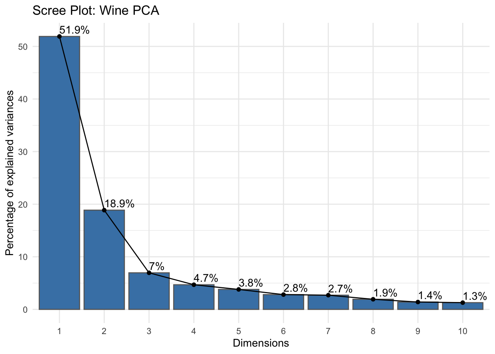
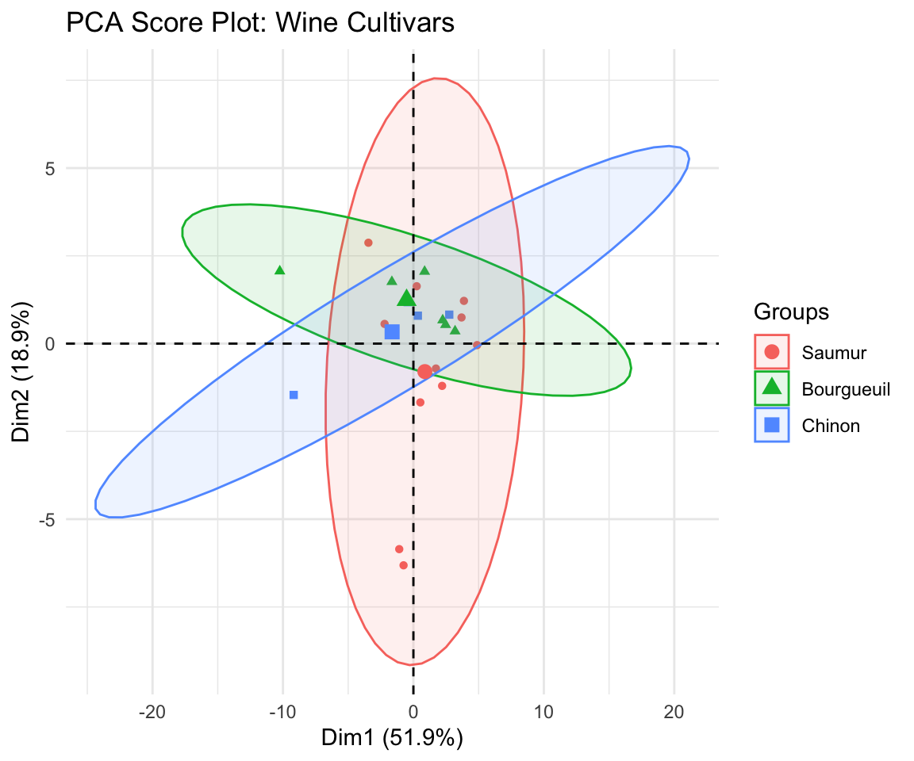

library(tidyverse)
library(this.path)
library(factoextra)
library(patchwork)
setwd(this.dir())
select <- dplyr::select
filter <- dplyr::filterDay 14 (PM) Lab: Principal Component Analysis
SC INBRE Biostatistics Summer Intensive 2026
1 Overview
This afternoon you will practice PCA on a new dataset: chemical measurements of 178 wines from three cultivars grown in the same region of Italy. Each wine has 13 continuous measurements including alcohol content, acidity, phenolic compounds, color intensity, and other chemical properties.
The dataset has no missing values, the variables are on different scales (so scaling is clearly necessary), and the three cultivars give you a natural grouping to validate the PCA results against – without using that grouping during the PCA itself. It is a clean, well-studied dataset that makes PCA results easy to check.
How this lab works:
- Part 1 (instructor demo, ~20 min): Load the data and run through the setup together.
- Part 2 (on your own, ~90 min): Five exercises taking you through a complete PCA workflow.
Note
The wine dataset is in the pgirmess package or can be loaded directly. We load it from a built-in copy below – no installation needed.
2 Part 1: Instructor Demo
2.1 Setup
2.2 Load the Wine Data
# The wine dataset is available in the rattle package,
# or we can read it directly from the UCI repository
# Here we use the version bundled with FactoMineR
data(wine, package = "FactoMineR")
# The FactoMineR version has a slightly different structure
# Let's inspect it
head(wine) Label Soil Odor.Intensity.before.shaking
2EL Saumur Env1 3.074
1CHA Saumur Env1 2.964
1FON Bourgueuil Env1 2.857
1VAU Chinon Env2 2.808
1DAM Saumur Reference 3.607
2BOU Bourgueuil Reference 2.857
Aroma.quality.before.shaking Fruity.before.shaking Flower.before.shaking
2EL 3.000 2.714 2.280
1CHA 2.821 2.375 2.280
1FON 2.929 2.560 1.960
1VAU 2.593 2.417 1.913
1DAM 3.429 3.154 2.154
2BOU 3.111 2.577 2.040
Spice.before.shaking Visual.intensity Nuance Surface.feeling
2EL 1.960 4.321 4.000 3.269
1CHA 1.680 3.222 3.000 2.808
1FON 2.077 3.536 3.393 3.000
1VAU 2.160 2.893 2.786 2.538
1DAM 2.040 4.393 4.036 3.385
2BOU 2.077 4.464 4.259 3.407
Odor.Intensity Quality.of.odour Fruity Flower Spice Plante Phenolic
2EL 3.407 3.308 2.885 2.320 1.840 2.000 1.650
1CHA 3.370 3.000 2.560 2.440 1.739 2.000 1.381
1FON 3.250 2.929 2.769 2.192 2.250 1.750 1.250
1VAU 3.160 2.880 2.391 2.083 2.167 2.304 1.476
1DAM 3.536 3.360 3.160 2.231 2.148 1.762 1.600
2BOU 3.179 3.385 2.800 2.240 2.148 1.750 1.476
Aroma.intensity Aroma.persistency Aroma.quality Attack.intensity Acidity
2EL 3.259 2.963 3.200 2.963 2.107
1CHA 2.962 2.808 2.926 3.036 2.107
1FON 3.077 2.800 3.077 3.222 2.179
1VAU 2.542 2.583 2.478 2.704 3.179
1DAM 3.615 3.296 3.462 3.464 2.571
2BOU 3.214 3.148 3.321 3.286 2.393
Astringency Alcohol Balance Smooth Bitterness Intensity Harmony
2EL 2.429 2.500 3.250 2.731 1.926 2.857 3.143
1CHA 2.179 2.654 2.926 2.500 1.926 2.893 2.964
1FON 2.250 2.643 3.321 2.679 2.000 3.074 3.143
1VAU 2.185 2.500 2.333 1.680 1.963 2.462 2.038
1DAM 2.536 2.786 3.464 3.036 2.071 3.643 3.643
2BOU 2.643 2.857 3.286 2.857 2.179 3.464 3.500
Overall.quality Typical
2EL 3.393 3.250
1CHA 3.214 3.036
1FON 3.536 3.179
1VAU 2.464 2.250
1DAM 3.741 3.444
2BOU 3.643 3.393dim(wine)[1] 21 31
Note
If FactoMineR::wine has a different structure on your machine, use this alternative which loads the UCI wine data directly:
url <- paste0("https://archive.ics.uci.edu/ml/",
"machine-learning-databases/wine/wine.data")
wine_raw <- read.csv(url, header = FALSE)
names(wine_raw) <- c("Cultivar", "Alcohol", "MalicAcid", "Ash",
"AlcalinityAsh", "Magnesium", "TotalPhenols", "Flavanoids",
"NonflavanoidPhenols", "Proanthocyanins", "ColorIntensity",
"Hue", "OD280_OD315", "Proline")
wine_raw$Cultivar <- factor(wine_raw$Cultivar)For the exercises we will use a clean version with clear variable names:
# Build a clean tibble with the 13 chemical variables + cultivar label
# Using the UCI wine data structure (adjust column names if your load differs)
wine_clean <- wine |>
as_tibble() |>
rename_with(tolower)
# Check the structure
glimpse(wine_clean)Rows: 21
Columns: 31
$ label <fct> Saumur, Saumur, Bourgueuil, Chinon, Saum…
$ soil <fct> Env1, Env1, Env1, Env2, Reference, Refer…
$ odor.intensity.before.shaking <dbl> 3.074, 2.964, 2.857, 2.808, 3.607, 2.857…
$ aroma.quality.before.shaking <dbl> 3.000, 2.821, 2.929, 2.593, 3.429, 3.111…
$ fruity.before.shaking <dbl> 2.714, 2.375, 2.560, 2.417, 3.154, 2.577…
$ flower.before.shaking <dbl> 2.280, 2.280, 1.960, 1.913, 2.154, 2.040…
$ spice.before.shaking <dbl> 1.960, 1.680, 2.077, 2.160, 2.040, 2.077…
$ visual.intensity <dbl> 4.321, 3.222, 3.536, 2.893, 4.393, 4.464…
$ nuance <dbl> 4.000, 3.000, 3.393, 2.786, 4.036, 4.259…
$ surface.feeling <dbl> 3.269, 2.808, 3.000, 2.538, 3.385, 3.407…
$ odor.intensity <dbl> 3.407, 3.370, 3.250, 3.160, 3.536, 3.179…
$ quality.of.odour <dbl> 3.308, 3.000, 2.929, 2.880, 3.360, 3.385…
$ fruity <dbl> 2.885, 2.560, 2.769, 2.391, 3.160, 2.800…
$ flower <dbl> 2.320, 2.440, 2.192, 2.083, 2.231, 2.240…
$ spice <dbl> 1.840, 1.739, 2.250, 2.167, 2.148, 2.148…
$ plante <dbl> 2.000, 2.000, 1.750, 2.304, 1.762, 1.750…
$ phenolic <dbl> 1.650, 1.381, 1.250, 1.476, 1.600, 1.476…
$ aroma.intensity <dbl> 3.259, 2.962, 3.077, 2.542, 3.615, 3.214…
$ aroma.persistency <dbl> 2.963, 2.808, 2.800, 2.583, 3.296, 3.148…
$ aroma.quality <dbl> 3.200, 2.926, 3.077, 2.478, 3.462, 3.321…
$ attack.intensity <dbl> 2.963, 3.036, 3.222, 2.704, 3.464, 3.286…
$ acidity <dbl> 2.107, 2.107, 2.179, 3.179, 2.571, 2.393…
$ astringency <dbl> 2.429, 2.179, 2.250, 2.185, 2.536, 2.643…
$ alcohol <dbl> 2.500, 2.654, 2.643, 2.500, 2.786, 2.857…
$ balance <dbl> 3.250, 2.926, 3.321, 2.333, 3.464, 3.286…
$ smooth <dbl> 2.731, 2.500, 2.679, 1.680, 3.036, 2.857…
$ bitterness <dbl> 1.926, 1.926, 2.000, 1.963, 2.071, 2.179…
$ intensity <dbl> 2.857, 2.893, 3.074, 2.462, 3.643, 3.464…
$ harmony <dbl> 3.143, 2.964, 3.143, 2.038, 3.643, 3.500…
$ overall.quality <dbl> 3.393, 3.214, 3.536, 2.464, 3.741, 3.643…
$ typical <dbl> 3.250, 3.036, 3.179, 2.250, 3.444, 3.393…# Summary statistics for the chemical variables
wine_clean |>
select(where(is.numeric)) |>
summary() odor.intensity.before.shaking aroma.quality.before.shaking
Min. :2.643 Min. :2.593
1st Qu.:2.893 1st Qu.:2.926
Median :3.071 Median :3.107
Mean :3.111 Mean :3.046
3rd Qu.:3.214 3rd Qu.:3.179
Max. :3.708 Max. :3.429
fruity.before.shaking flower.before.shaking spice.before.shaking
Min. :2.375 Min. :1.826 Min. :1.667
1st Qu.:2.560 1st Qu.:1.926 1st Qu.:1.808
Median :2.731 Median :2.040 Median :1.962
Mean :2.714 Mean :2.057 Mean :1.991
3rd Qu.:2.833 3rd Qu.:2.185 3rd Qu.:2.077
Max. :3.154 Max. :2.280 Max. :2.667
visual.intensity nuance surface.feeling odor.intensity
Min. :2.607 Min. :2.536 Min. :2.444 Min. :2.889
1st Qu.:3.704 1st Qu.:3.407 1st Qu.:3.111 1st Qu.:3.286
Median :4.071 Median :3.893 Median :3.259 Median :3.370
Mean :3.958 Mean :3.727 Mean :3.180 Mean :3.395
3rd Qu.:4.321 3rd Qu.:4.036 3rd Qu.:3.357 3rd Qu.:3.481
Max. :4.714 Max. :4.536 Max. :3.462 Max. :3.737
quality.of.odour fruity flower spice
Min. :2.800 Min. :2.391 Min. :1.773 Min. :1.739
1st Qu.:3.077 1st Qu.:2.769 1st Qu.:2.083 1st Qu.:2.111
Median :3.346 Median :2.885 Median :2.192 Median :2.160
Mean :3.237 Mean :2.847 Mean :2.162 Mean :2.178
3rd Qu.:3.385 3rd Qu.:2.963 3rd Qu.:2.269 3rd Qu.:2.280
Max. :3.500 Max. :3.185 Max. :2.440 Max. :2.609
plante phenolic aroma.intensity aroma.persistency
Min. :1.750 Min. :1.250 Min. :2.542 Min. :2.308
1st Qu.:1.826 1st Qu.:1.476 1st Qu.:3.077 1st Qu.:2.893
Median :1.957 Median :1.545 Median :3.250 Median :3.036
Mean :1.964 Mean :1.542 Mean :3.197 Mean :2.983
3rd Qu.:2.042 3rd Qu.:1.600 3rd Qu.:3.321 3rd Qu.:3.148
Max. :2.304 Max. :1.905 Max. :3.615 Max. :3.296
aroma.quality attack.intensity acidity astringency
Min. :2.478 Min. :2.179 Min. :2.107 Min. :1.964
1st Qu.:2.880 1st Qu.:3.036 1st Qu.:2.250 1st Qu.:2.321
Median :3.192 Median :3.250 Median :2.393 Median :2.500
Mean :3.064 Mean :3.156 Mean :2.385 Mean :2.440
3rd Qu.:3.308 3rd Qu.:3.357 3rd Qu.:2.429 3rd Qu.:2.607
Max. :3.462 Max. :3.519 Max. :3.179 Max. :2.667
alcohol balance smooth bitterness
Min. :2.250 Min. :2.333 Min. :1.680 Min. :1.679
1st Qu.:2.704 1st Qu.:3.107 1st Qu.:2.500 1st Qu.:1.964
Median :2.778 Median :3.214 Median :2.821 Median :2.037
Mean :2.741 Mean :3.129 Mean :2.674 Mean :2.068
3rd Qu.:2.821 3rd Qu.:3.321 3rd Qu.:2.857 3rd Qu.:2.143
Max. :2.963 Max. :3.500 Max. :3.286 Max. :2.667
intensity harmony overall.quality typical
Min. :2.179 Min. :2.038 Min. :2.370 Min. :2.250
1st Qu.:3.037 1st Qu.:3.000 1st Qu.:3.179 1st Qu.:3.036
Median :3.250 Median :3.214 Median :3.464 Median :3.296
Mean :3.166 Mean :3.148 Mean :3.331 Mean :3.197
3rd Qu.:3.357 3rd Qu.:3.393 3rd Qu.:3.643 3rd Qu.:3.481
Max. :3.667 Max. :3.786 Max. :3.929 Max. :3.929 The variables are on very different scales: proline ranges in the hundreds while nonflavano_phenols is near zero. Scaling is essential before PCA.
2.3 Step 1: Scale and Run PCA
# Extract the numeric variables (drop the cultivar label for PCA)
X <- wine_clean |>
select(where(is.numeric)) |>
as.matrix()
# Standardize
X_s <- scale(X)
# Run PCA
pca_wine <- prcomp(X_s, center = FALSE, scale. = FALSE)2.4 Step 2: Quick Scree Plot
fviz_eig(pca_wine, addlabels = TRUE,
barfill = "steelblue", barcolor = "gray40") +
labs(title = "Scree Plot: Wine PCA") +
theme_minimal()
The first two PCs together explain roughly 55% of the total variance, and the curve shows a clear elbow after PC2 or PC3 – much sharper than the NHANES data from the morning, where variance was spread more evenly.
2.5 Step 3: Score Plot
fviz_pca_ind(pca_wine,
geom.ind = "point",
habillage = wine_clean$label,
addEllipses = TRUE,
repel = TRUE) +
labs(title = "PCA Score Plot: Wine Cultivars") +
theme_minimal()
The three cultivars separate cleanly along PC1 and PC2 even though we did not use the cultivar labels during PCA. This confirms that the chemical variables genuinely capture cultivar differences – exactly what you want to see.
3 Part 2: Exercises
3.1 Instructions
Step 1. Open a new Quarto document. Title it "Day 14 Lab: Principal Component Analysis".
Step 2. Copy the setup and data-loading chunks from Part 1. You need pca_wine, X_s, and wine_clean available.
Step 3. Work through Exercises 1–5. Add 2–3 sentences of interpretation after each result.
Step 4. Render when finished.
Note
Exercises 1–3 cover the core PCA output. Exercise 4 explores the loadings in depth. Exercise 5 is a challenge that uses the PC scores in a regression model.
Exercise 1 – Variance Explained.
Compute the proportion of variance explained by each PC. The formula is:
var_exp <- pca_wine$sdev^2 / sum(pca_wine$sdev^2)Print a table with the PC number, individual variance explained (%), and cumulative variance explained (%).
How many PCs are needed to explain at least 70% of the total variance? At least 90%?
Apply Kaiser’s rule: keep PCs with eigenvalue greater than 1. The eigenvalues are
pca_wine$sdev^2. How many PCs would Kaiser’s rule suggest keeping?Make a scree plot using
fviz_eig(). Where does the “elbow” appear? Does it agree with the answers from parts b and c? Which criterion would you use, and why?
# your code hereExercise 2 – Score Plot and Cultivar Separation.
Produce a score plot (observations in PC space) using
fviz_pca_ind(). Color points by cultivar (habillage = wine_clean$label) and add confidence ellipses (addEllipses = TRUE).Do the three cultivars separate in the first two PCs? Which cultivar is most distinct from the other two?
PC1 runs left to right on the plot. Look at where each cultivar falls along PC1. Which cultivar has the highest PC1 scores (furthest right)? Which has the lowest (furthest left)?
Now make a second score plot using PC1 and PC3 instead of PC1 and PC2. Pass
axes = c(1, 3)tofviz_pca_ind(). Does adding PC3 improve or worsen the separation between cultivars?
# your code hereExercise 3 – Loadings.
Extract the loadings matrix from
pca_wine$rotation. Print the loadings for the first three PCs, rounded to 3 decimal places.For PC1: which three variables have the largest absolute loadings? What do these variables have in common chemically? Based on this, what biological property might PC1 be capturing?
For PC2: which three variables have the largest absolute loadings? Are these the same variables as PC1 or different? What might PC2 be capturing?
Make a loading bar plot for PC1 and PC2 (see the Quick Reference Card for the ggplot2 code). Does the pattern of loadings match your interpretation from parts b and c?
Produce a biplot using
fviz_pca_biplot(). Color observations by cultivar. Describe: which variables have arrows pointing in the same direction as the cultivar that has the highest PC1 scores?
# your code hereExercise 4 – Effect of Scaling.
This exercise demonstrates why scaling matters.
Run PCA without scaling:
pca_unscaled <- prcomp(X, center = TRUE, scale. = FALSE)Make a scree plot. What percentage of variance does PC1 explain in the unscaled PCA? Compare this to the scaled version from Exercise 1.
Look at which variable has the largest variance in the raw data:
apply(X, 2, var) |> sort(decreasing = TRUE)Which variable dominates? Does this match which variables have the largest loadings on PC1 in the unscaled PCA?
Make score plots for both the scaled and unscaled PCA, colored by cultivar. Do the cultivars still separate in the unscaled version?
Write 2–3 sentences explaining why you should (almost) always scale before PCA, using what you observed in parts a–c as evidence.
# your code hereExercise 5 (Challenge) – PC Scores in Logistic Regression.
The three wine cultivars can be predicted from the chemical measurements. This exercise uses the PC scores from the scaled PCA as predictors in a multinomial logistic regression – a direct application of PCR.
Extract the scores for the first 5 PCs:
scores_df <- as.data.frame(pca_wine$x[, 1:5]) |> as_tibble() |> mutate(cultivar = wine_clean$label)Split the data into training (70%) and test (30%) sets using
set.seed(2026)andsample(). Fit a multinomial logistic regression on the training set usingnnet::multinom():library(nnet) fit <- multinom(cultivar ~ PC1 + PC2 + PC3 + PC4 + PC5, data = train_scores, trace = FALSE)Predict cultivar on the test set and build a confusion matrix:
pred <- predict(fit, newdata = test_scores) table(Predicted = pred, Actual = test_scores$cultivar)What is the overall classification accuracy?
Now fit a second model using only PC1 and PC2. Compare the classification accuracy of the 2-PC model to the 5-PC model. How much accuracy is lost by using only the first two components?
Discussion. In the morning notes we warned that PCA is unsupervised – it finds the directions of maximum variance in \(X\) without looking at \(Y\). In this wine example, the PCA worked well for classification anyway. Why do you think that is? Can you think of a situation where the first two PCs would explain most of the variance in \(X\) but fail to separate the groups in \(Y\)?
# your code here4 Quick Reference Card
4.1 Setup
library(tidyverse)
library(factoextra)
library(patchwork)
select <- dplyr::select
filter <- dplyr::filter4.2 Loading the Wine Data
data(wine, package = "FactoMineR")
# Or from UCI directly (no package needed):
url <- paste0("https://archive.ics.uci.edu/ml/",
"machine-learning-databases/wine/wine.data")
wine_raw <- read.csv(url, header = FALSE)
names(wine_raw) <- c("Cultivar", "Alcohol", "MalicAcid", "Ash",
"AlcalinityAsh", "Magnesium", "TotalPhenols", "Flavanoids",
"NonflavanoidPhenols", "Proanthocyanins", "ColorIntensity",
"Hue", "OD280_OD315", "Proline")
wine_raw$Cultivar <- factor(wine_raw$Cultivar)4.3 Running PCA
# Extract numeric variables and scale
X <- wine_clean |> select(where(is.numeric)) |> as.matrix()
X_s <- scale(X)
# Fit PCA (on already-scaled data)
pca_res <- prcomp(X_s, center = FALSE, scale. = FALSE)
# Fit PCA with scaling inside prcomp
pca_res <- prcomp(X, center = TRUE, scale. = TRUE)4.4 Variance Explained
# Proportion of variance per PC
var_exp <- pca_res$sdev^2 / sum(pca_res$sdev^2)
# Cumulative
cumsum(var_exp)
# Table
tibble(PC = seq_along(var_exp),
Individual = round(var_exp * 100, 1),
Cumulative = round(cumsum(var_exp) * 100, 1))
# Kaiser's rule: eigenvalue > 1
pca_res$sdev^2
# Scree plot
fviz_eig(pca_res, addlabels = TRUE,
barfill = "steelblue", barcolor = "gray40")4.5 Score Plots
# Color by group
fviz_pca_ind(pca_res,
geom.ind = "point",
habillage = group_vector,
addEllipses = TRUE,
repel = TRUE)
# Use different PCs (e.g., PC1 vs PC3)
fviz_pca_ind(pca_res, axes = c(1, 3),
habillage = group_vector)
# Extract scores manually
scores <- as.data.frame(pca_res$x)4.6 Loadings
# Raw loadings matrix
pca_res$rotation[, 1:3] |> round(3)
# Largest contributors to PC1
sort(abs(pca_res$rotation[, 1]), decreasing = TRUE)
# Loading bar plot
as.data.frame(pca_res$rotation) |>
rownames_to_column("variable") |>
pivot_longer(-variable, names_to = "PC", values_to = "loading") |>
filter(PC %in% c("PC1","PC2")) |>
ggplot(aes(x = reorder(variable, loading), y = loading,
fill = loading > 0)) +
geom_col(show.legend = FALSE) +
scale_fill_manual(values = c("TRUE" = "steelblue",
"FALSE" = "firebrick")) +
facet_wrap(~ PC, scales = "free_y") +
coord_flip() +
labs(x = NULL, y = "Loading weight") +
theme_minimal()
# Biplot
fviz_pca_biplot(pca_res,
geom.ind = "point",
habillage = group_vector,
addEllipses = TRUE,
repel = TRUE)4.7 Predicting New Data
# Apply same rotation to new (scaled) data
X_new_s <- scale(X_new,
center = attr(X_s, "scaled:center"),
scale = attr(X_s, "scaled:scale"))
new_scores <- predict(pca_res, newdata = X_new_s)4.8 Key Concepts
| Term | Meaning |
|---|---|
| Loadings | Weights each variable contributes to a PC. Large = influential. |
| Scores | Each observation’s value on each PC. Used in regression/plots. |
| Eigenvalue | Variance explained by a PC. Kaiser’s rule: keep eigenvalue > 1. |
| Scree plot | Eigenvalue vs. PC number. Look for the elbow. |
| Biplot | Shows both observations (points) and variables (arrows). |
| Global method | Transformation is linear and invertible. Can use in regression. |
| Local method | t-SNE, UMAP. For visualization only. Cannot use in regression. |